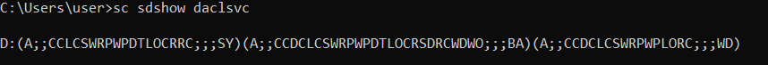

permission of a service
check the permission of the service manually(see
Windows
manual here):
We need to evaluate each result string that have this format
(Allow/Deny;;String of permissions;;;SID or acronym for built-in account or group)
A or D
→ Allow/Deny
A → Allow
D → Deny
String of permissions → string
formed by pair of letters each of these represents a specific permission:
DC -
SERVICE_CHANGE_CONFIG (the right to reconfigure the service)
WD – Modify
permissions
WO – Modify owner
CC — SERVICE_QUERY_CONFIG — ask the SCM for the service’s
current configuration
LC — SERVICE_QUERY_STATUS — ask the SCM for the service’s current status
SW —
SERVICE_ENUMERATE_DEPENDENTS — list dependent services
LO — SERVICE_INTERROGATE — ask the service its current
status
CR — SERVICE_USER_DEFINED_CONTROL — send a service control defined by the service’s authors
RC —
READ_CONTROL — read the security descriptor on this service.